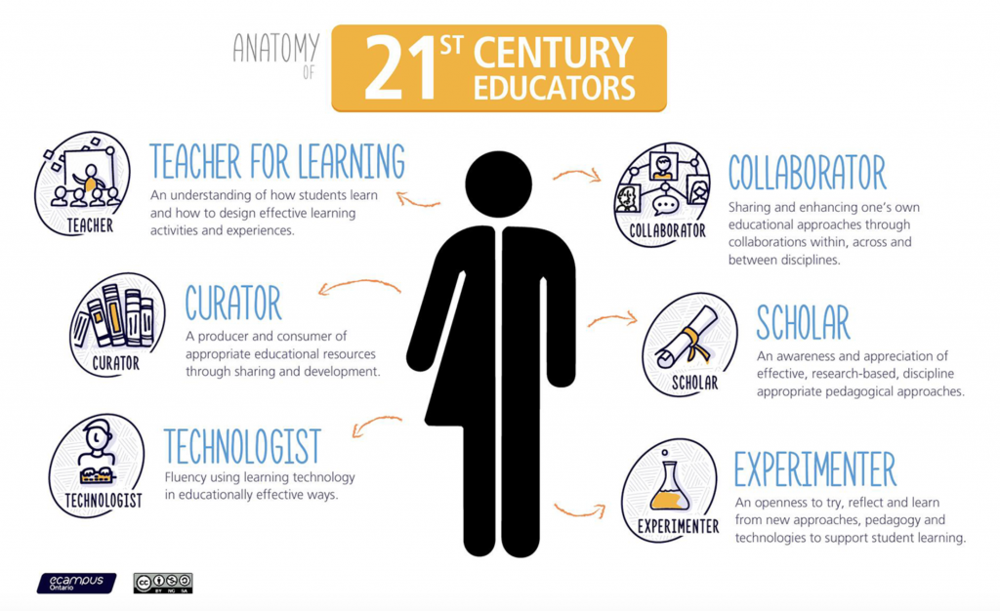

13.1 Você é um super-herói?



A Figura 13.1.1, concebida por Simon Bates, Pró-Reitor Adjunto de Ensino e Aprendizagem na UBC (2016), sintetiza a diversidade de papéis exigidos a um docente na era digital. Nesta fase da leitura, o leitor poderá considerar excessivo o volume de exigências apresentadas, em particular se a sua paixão reside na investigação científica da sua área de especialidade e a sua prioridade assenta na produção de novos saberes por intermédio da pesquisa e do trabalho acadêmico. Como viabilizar a disponibilidade de tempo para se especializar na docência caso este processo demande a redefinição integral do modelo letivo convencional sob o qual se sente seguro? Esta preocupação é partilhada por diversos docentes. Martha Cleveland-Innes (2013) escreve:
Apresenta-se irrealista exigir que o docente do ensino superior concilie a especialização científica na sua área, um percurso de pesquisa produtivo, compromissos de extensão acadêmica E a especialização pedagógica no ensino on-line. O equívoco estrutural da academia assenta em conceber as funções do docente como um conjunto de atividades teoricamente equilibradas entre ensino, pesquisa e extensão (Atkinson, 2001). Com variações segundo o perfil institucional, a pesquisa científica constitui a atividade de maior prestígio e recompensa acadêmica. Embora esta premissa se mantenha inalterada, "...o ensino em sala de aula e a produção de materiais de estudo tornaram-se complexos e sofisticados, exigindo novas tarefas do docente. Estas novas exigências não substituem as funções preexistentes, mas acumulam-se sobre as mesmas, resultando em acréscimo de trabalho." (Rhoades, 2000, p. 38). Torna-se necessário clarificar este cenário e analisar de que forma as inovações pedagógicas podem ser integradas no papel do docente universitário.
A análise sobre a integração destas inovações no papel do docente e do professor na era digital constitui o foco deste capítulo. Não se apresenta realista exigir que a totalidade dos docentes atue como super-heróis, contudo apresenta-se viável e recomendável exigir padrões de competência e profissionalismo na era digital.
A mais-valia reside em que, tendo concluído a leitura dos capítulos desta obra, o leitor terá desenvolvido as competências necessárias para um desempenho docente qualificado e profissional na era digital, situando-se à frente da maioria dos seus pares neste domínio. Complementarmente, identificam-se políticas de apoio a implementar pelas administrações das instituições de ensino superior, foco das secções seguintes deste capítulo.
Referências
Atkinson, M.P. (2001) ‘The scholarship of teaching and learning: reconceptualizing scholarship and transforming the academy’ Social Forces, Vol. 79, No. 4 (pp. 1217-1229).
Bates, S. (2016) The 21st Century Educator Burnaby BC: BCIT Faculty of Nursing Scholarship Day, May
Cleveland-Innes, M. (2013) ‘Teaching in an online community of inquiry: institutional and individual adjustment in the new higher education‘, in Akyol, Z. & Garrison, R.D. (eds.) Educational communities of inquiry: theoretical framework, research and practice, (pp. 389-400). Hershey, PA: IGI Global
Rhoades, G. (2000) ‘The changing role of faculty’ in Losco, J. and Fife, B. (eds.) Higher Education in Transition: the challenges of the new millennium Westport CT: Bergin and Garvey